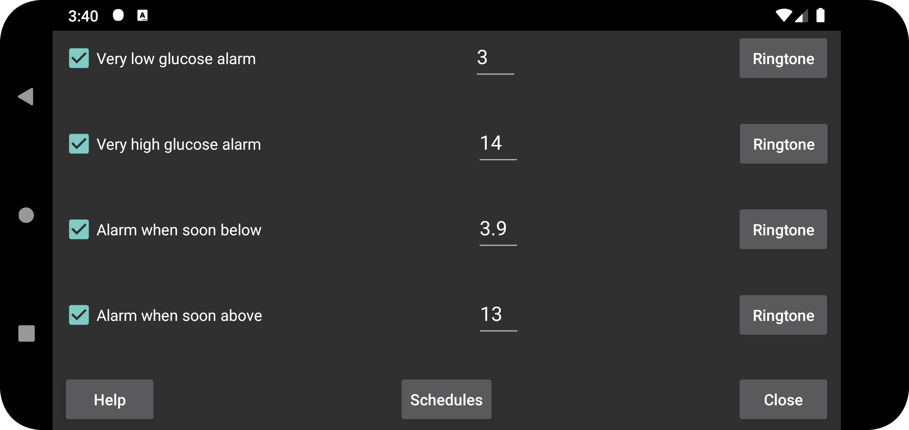

ar az de es fa hi it ja ko nl ru uk uz en
Adi aşağı qlükoza siqnalından daha aşağı həddə çatan zaman verilən ikinci siqnal.
Adi yüksək qlükoza siqnalından daha yüksək həddə çatan zaman verilən ikinci siqnal.
Azalan qlükoza səviyyəsinin yaxın vaxtda göstərilən həddən aşağı düşəcəyi proqnozlaşdırıldıqda siqnal verilir.
Artan qlükoza səviyyəsinin yaxın vaxtda göstərilən həddi keçəcəyi proqnozlaşdırıldıqda siqnal verilir.
Profilin günün müəyyən saatında aktivləşməsini planlaşdırın. Beləliklə, gündüz və gecə fərqli qlükoza hədlərindən və siqnal səslərindən istifadə edə, yaxud gecə qlükoza göstəricilərinin səsləndirilməsini avtomatik söndürə bilərsiniz.